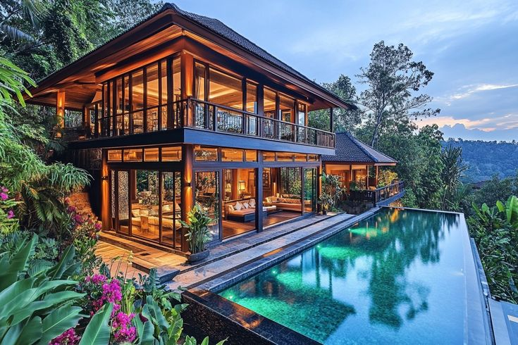
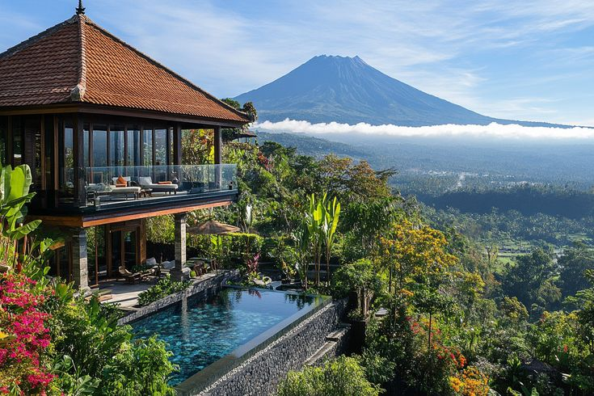

Nyamanin lahir dari kerinduan akan tempat beristirahat yang hening, autentik, dan dikurasi secara cermat demi menghadirkan pengalaman tinggal yang tak terlupakan.
Jelajahi Kisah Kami Pilar Nilai Kami
Nyamanin berawal dari perjalanan sederhana menelusuri sudut-sudut tersembunyi di Bali, perbukitan sejuk Bandung, dan pesisir hening Lombok. Kami menyadari bahwa liburan sejati bukan sekadar berpindah tempat, melainkan menemukan ruang di mana napas melambat dan pikiran kembali jernih.
Setiap unit diinspeksi secara langsung oleh kurator profesional kami.
Ruang privat seutuhnya tanpa kompromi, jauh dari hiruk-pikuk keramaian kota.
Harga jujur tanpa biaya tersembunyi di akhir transaksi.
Bermitra secara etis dengan pemilik properti dan tenaga kerja lokal.
Setiap hunian melewati audit independen yang mencakup 100 parameter kenyamanan: tekanan air hangat, isolasi akustik, hingga kesiapan perlengkapan memasak.

★★★★★
"Menemukan villa di Canggu yang benar-benar hening tanpa kebisingan kelab malam. Semua foto dan rincian fasilitas 100% akurat."
Clarissa WiryawanTamu di Villa Samudra, Bali
★★★★★
"Sebagai pemilik hunian arsitektur di Dago Giri Bandung, saya sangat menghargai kurasi Nyamanin."
Bambang HartonoMitra Host 'Rumah Hening', Bandung
Atau bergabunglah bersama jaringan kurasi pemilik hunian privat terbaik di Indonesia.
Jelajahi Koleksi Villa